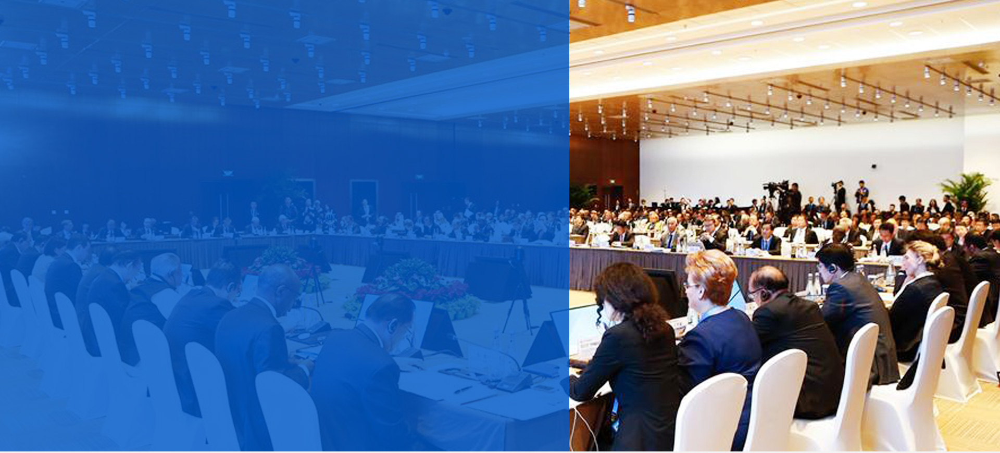

Founding Background
成立背景
一带一路金融科技发展中心于2017年8月在中国香港行政特区成立，由国内与海外的社会领袖共同组成。一带一路是亚洲第一强国中国主导的，本世界最大的国际合作平台。金融科技是随互联网之后，改造世界传统交易形式和老旧金融体系的经济大改革。一带一路金融科技发展中心便是结合这两大趋势而构建的民间力量。

Development Background
发展背景
一带一路经济区的基础建设，招商，引流和持续发展是整个经济带所有国家的重点关注。自2013年习近平主席提出此概念之后，民间各路力量陆续对一带一路发起进攻，共同向应国家方向，至今已有数千个项目正如火如荼的在此经济片区执行。如此浩大的国际合作平台，必定需要庞大的资本力量，持续的支持其发展及发展后的实际运营。
近几年，金融资本界亦正在面临着前所未有的改革。区块链技术的诞生与去中央的金融交易法则以比特币为先锋，正深切的影响着金融市场的发展。民间和政府力量均将自己的精英人士聚集于此，试图找出金融行业未来的突破点，抢先入手。
发展方向Development Direction
本中心相信，通过促进金融科技的研究，开发和实施，并借助一带一路开放的国际合作模式以及其潜在的巨大商机，必定可以培育出许多出色的项目和企业。为此，本中心将一带一路经济带上的社会领袖聚集为智囊，并且以开放的形式召集相关的企业与机构共同合作，共同搭乘本世纪两大趋势为我们开动的列车。